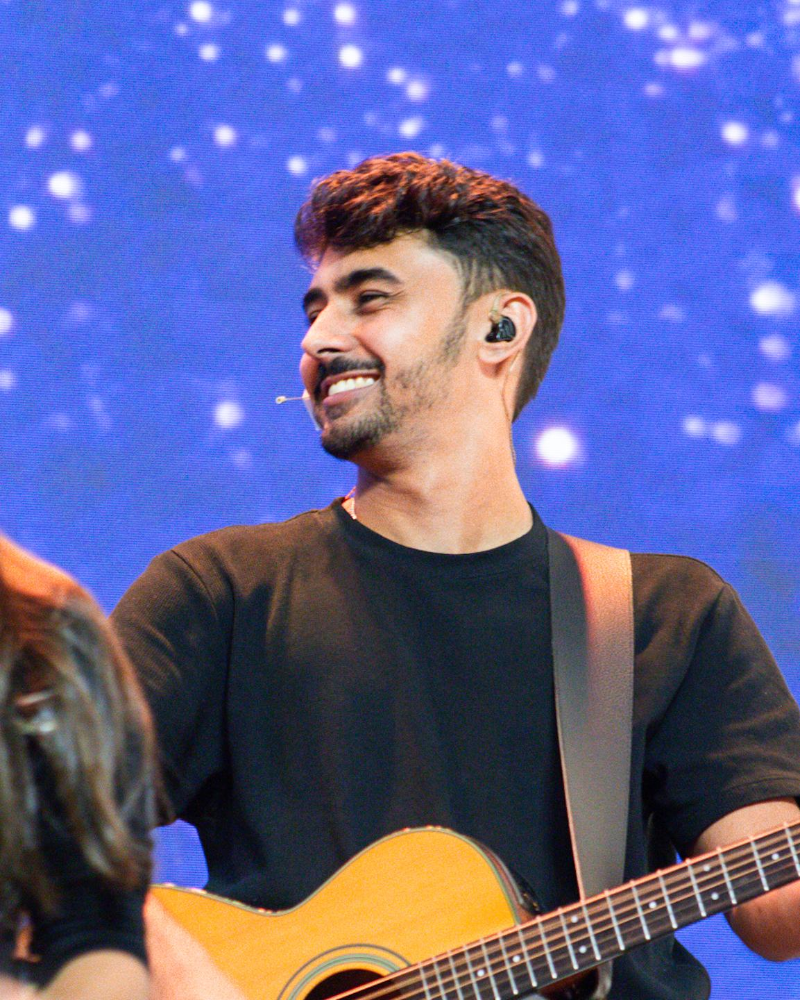
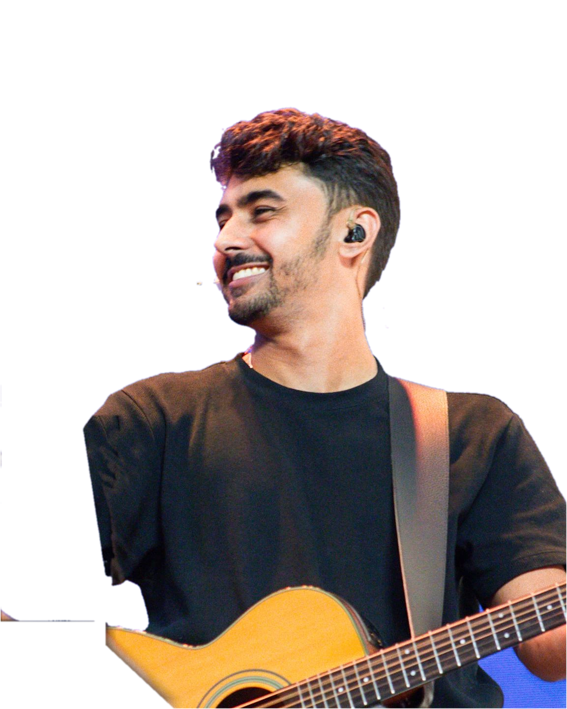

ruan
.
marchiori


Por aqui
Música · Web · Enfermagem
Ruan Marchiori
Música, tecnologia, enfermagem e projetos.
Links
Instagram
@marchiori_ruan
Grupo WebHub
WhatsApp
Site do Grupo WebHub
Conheça nossos trabalhos
Atlas Anatomia
Atlas 3D do corpo humano